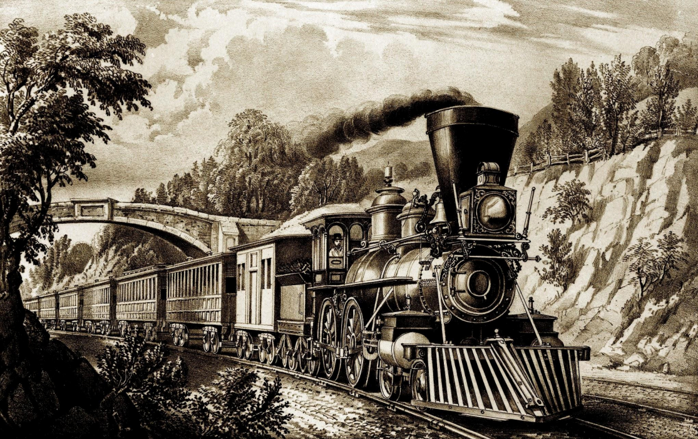
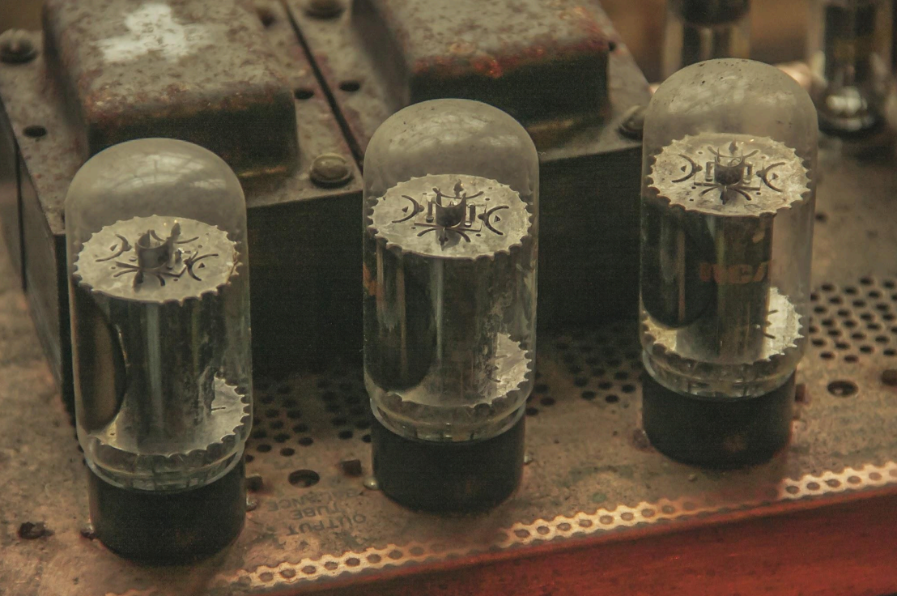

Introducción
Las revoluciones industriales han transformado drásticamente la sociedad y la economía a lo largo de
la historia. Cada una ha estado marcada por innovaciones tecnológicas clave que permitieron nuevos
procesos de producción y cambios significativos en la organización económica y social. Esta
investigación cubre las tres revoluciones industriales ocurridas hasta ahora y sus principales
características e impactos.
Primera revolución industrial
La Primera Revolución Industrial tuvo lugar entre mediados del siglo XVIII y principios del siglo
XIX, originándose en Gran Bretaña.

Características
- Transición de la manufactura artesanal a la producción fabril.
-
Introducción de máquinas para aumentar la productividad, como la hiladora "Spinning Jenny".
- Uso de nuevas fuentes de energía como el vapor y el carbón.
- Desarrollo de mejoras en el transporte como los canales y los ferrocarriles.
Impacto y repercusiones
- Crecimiento de la industria textil y metalúrgica.
- Formación de una nueva clase social urbana: el proletariado.
- Éxodo rural y crecimiento acelerado de ciudades industriales.
- Aumento de la desigualdad de riqueza entre capitalistas y trabajadores.
Innovaciones tecnológicas
- Máquina de vapor de Watt.
- Hiladora mecánica "Spinning Jenny" de Hargreaves.
- Mule Jenny de Crompton para hilar.
- Telar mecánico impulsado a vapor
Sectores económicos con mayores cambios
Los sectores más transformados fueron el textil y el metalúrgico, con la introducción de nuevas
tecnologías y maquinaria que aumentaron exponencialmente la producción.
Avances científicos
- Nuevos procesos para la fundición del hierro.
- Desarrollo de la química moderna.
- Perfeccionamiento del motor de vapor.
Segunda Revolución Industrial
La Segunda Revolución Industrial ocurrió entre finales del siglo XIX y principios del XX, con
epicentro en Estados Unidos, Alemania y Gran Bretaña.
Características
- Masificación en el uso de la electricidad y el petróleo.
- Producción en masa gracias a la línea de montaje.
- Grandes innovaciones en la industria química, acero y petrolera.
- Expansión de redes ferroviarias y desarrollo del transporte motorizado.
Impacto y repercusiones
- Rápida industrialización y crecimiento de la producción fabril.
- Urbanización acelerada y migraciones masivas campo-ciudad.
- Aparición de grandes monopolios industriales.
- Movimiento obrero organizado y lucha por derechos laborales.
Innovaciones tecnológicas
- Motor de combustión interna y automóvil.
- Bombilla eléctrica de Edison.
- Procesos industriales para producir acero y aluminio.
- Cadena de montaje de Ford para producción en masa.
Sectores económicos con mayores cambios
Los principales cambios ocurrieron en los sectores automotriz, eléctrico, petrolero, químico y
metalúrgico.
Avances científicos
- Desarrollo de motores eléctricos
- Descubrimiento y aplicaciones de la electricidad
- Nuevas técnicas en ingeniería mecánica e industrial
- Progreso en química orgánica e inorgánica.
Tercera Revolución Industrial
La Tercera Revolución Industrial comenzó en la década de 1960, con una transición hacia la
automatización industrial mediante electrónica y tecnologías de la información.

Características
- Uso de electrónica y tecnologías de información para automatizar procesos industriales.
- Robótica para la manufactura flexible.
- Computadoras y máquinas con control numérico.
- Desarrollo de internet y telecomunicaciones digitales.
Impacto y repercusiones
- Automatización de la producción en masa en fábricas.
- Deslocalización industrial hacia países de bajo costo.
- Aumento del sector servicios en las economías desarrolladas.
- Sociedad de la información y del conocimiento.
Innovaciones tecnológicas
- Circuito integrado o microchip.
- Computadora personal (PC).
- Robots industriales programables.
- Internet y World Wide Web.
Sectores económicos con mayores cambios
Electrónica, telecomunicaciones, informática y sector automotriz con alta automatización.
Avances científicos
- Desarrollo de la informática, computadoras y software.
- Progreso en telecomunicaciones y transmisión de datos.
- Nuevos materiales como polímeros, plásticos y fibras ópticas.
- Investigación espacial.
Cuarta Revolución industrial
La Cuarta Revolución Industrial, también conocida como Industria 4.0, se refiere a la actual
transformación tecnológica que está teniendo lugar en diversos sectores industriales y económicos.
Esta revolución se caracteriza por la fusión de tecnologías disruptivas que están cambiando
drásticamente la forma en que vivimos, trabajamos y nos relacionamos. Aquí te presento algunas de
sus principales características, impactos, innovaciones tecnológicas, sectores económicos con
mayores cambios y avances científicos.
Características
-
Internet de las cosas (IoT): La interconexión de dispositivos y objetos a través de internet,
lo que permite la recopilación y el análisis de datos en tiempo real.
-
Inteligencia artificial (IA) y aprendizaje automático: El desarrollo de sistemas capaces de
aprender y tomar decisiones sin intervención humana.
-
Robótica avanzada: Robots más autónomos, flexibles y colaborativos, capaces de trabajar junto
a los humanos.
-
Realidad aumentada y realidad virtual: La superposición de información digital sobre el mundo
físico y la creación de entornos virtuales inmersivos.
-
Fabricación aditiva (impresión 3D): La producción de objetos capa por capa a partir de un
modelo digital.
-
Blockchain: Una tecnología de registro distribuido que permite transacciones seguras y
transparentes sin intermediarios.
-
Computación en la nube: El acceso a recursos informáticos a través de internet, lo que permite
una mayor escalabilidad y eficiencia.
Impacto y repercusiones
-
Automatización de procesos y tareas repetitivas, lo que puede generar desempleo en algunos
sectores.
- Mayor eficiencia y productividad en la fabricación y los servicios.
- Nuevos modelos de negocio y oportunidades económicas.
- Cambios en las habilidades y competencias requeridas en el mercado laboral.
- Preocupaciones sobre la privacidad y la seguridad de los datos.
- Disrupciones en industrias y sectores tradicionales.
- Necesidad de adaptación y capacitación continua de los trabajadores.
Innovaciones tecnológicas
- Vehículos autónomos y sistemas de transporte inteligentes
- Fabricación personalizada y bajo demanda mediante impresión 3D.
- Sistemas de monitoreo y control de procesos industriales en tiempo real.
- Aplicaciones de realidad aumentada y realidad virtual en diversos sectores.
- Sistemas de ciberseguridad avanzados para proteger redes y datos.
- Dispositivos portátiles y wearables conectados a internet.
-
Plataformas de análisis de datos y toma de decisiones basadas en inteligencia artificial.
Sectores económicos con mayores cambios
- Manufactura: Automatización de procesos, robótica colaborativa, fabricación aditiva.
-
Logística y transporte: Vehículos autónomos, sistemas de gestión de flotas, cadenas de
suministro inteligentes.
-
Energía: Redes eléctricas inteligentes, fuentes de energía renovables, gestión eficiente de
recursos.
-
Salud: Dispositivos médicos inteligentes, telemedicina, análisis de datos para diagnósticos y
tratamientos personalizados.
-
Agricultura: Agricultura de precisión, monitoreo de cultivos, sistemas de riego inteligentes.
- Finanzas: Fintech, blockchain, servicios financieros digitales, criptomonedas.
-
Servicios: Automatización de tareas, asistentes virtuales, análisis de datos para mejorar la
experiencia del cliente.
Avances científicos
-
Inteligencia artificial y aprendizaje automático: Algoritmos más precisos y capaces de
procesar grandes cantidades de datos
-
Materiales avanzados: Nuevos materiales con propiedades mejoradas para aplicaciones
industriales y médicas.
- Biotecnología: Ingeniería genética, terapias génicas, biología sintética.
-
Nanotecnología: Manipulación de materiales a escala nanométrica para crear nuevos productos y
dispositivos.
-
Energías renovables: Desarrollo de tecnologías más eficientes para la generación y
almacenamiento de energía limpia
- Robótica: Robots más autónomos, flexibles y capaces de interactuar con su entorno.
-
Computación cuántica: Desarrollo de computadoras cuánticas con capacidades de procesamiento
sin precedentes.